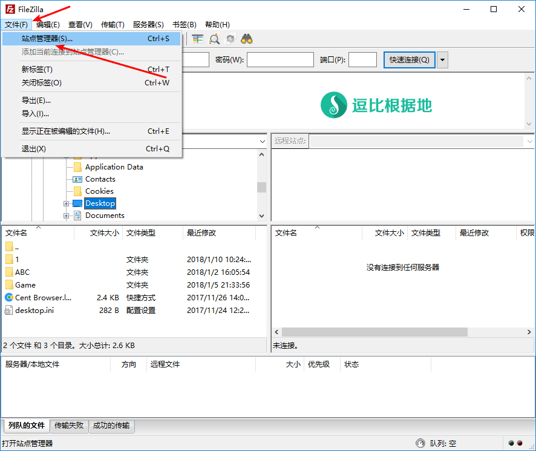
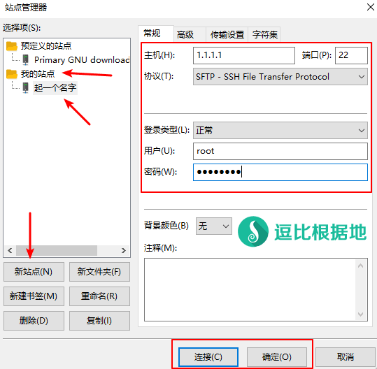
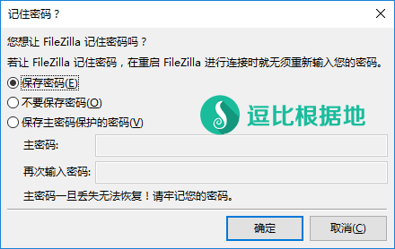
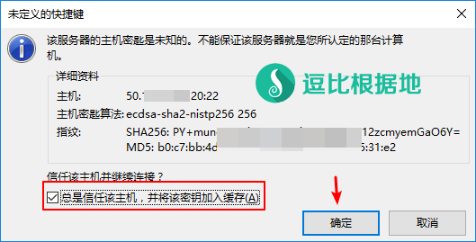
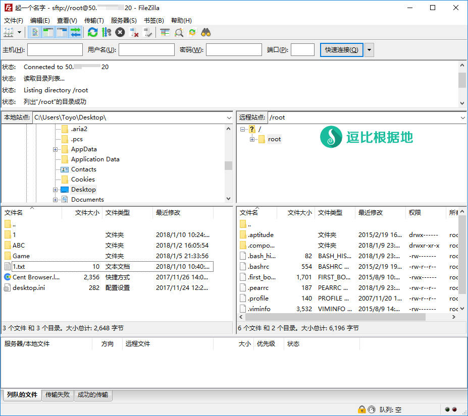
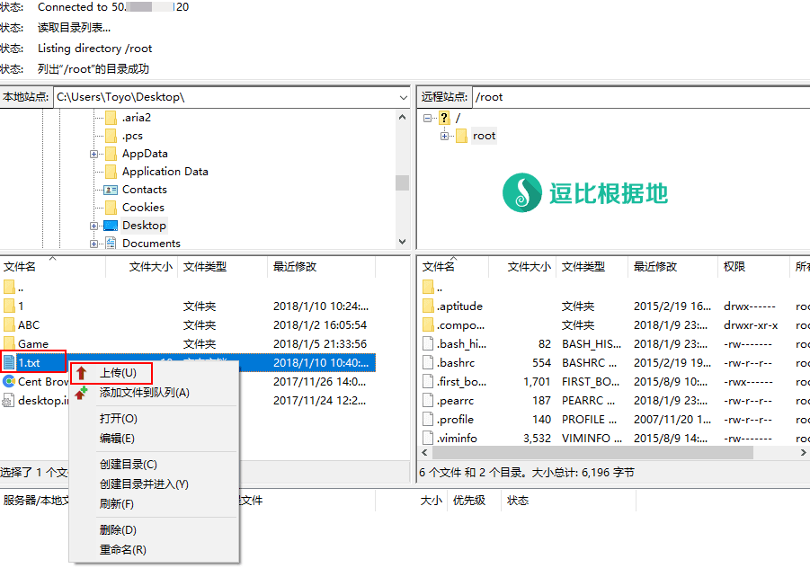
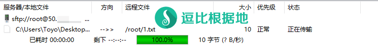
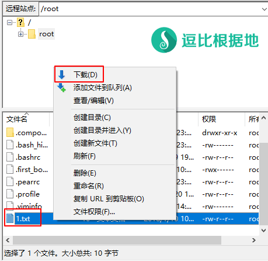

以前经常会碰到一些小白想要上传文件到服务器 或者 下载服务器文件到本地，但是不知道怎么做，我当时一般是直接告诉他SFTP让他自己去找教程 或者 告诉他我另一个快速搭建HTTP服务的教程，让他们通过HTTP服务来下载回本地。
现在想想我网站的 Linux 基础教程还是太少，所以今天先写一个 SFTP 的小白教程吧。
SFTP 介绍
SFTP是安全文件传送协议。可以为传输文件提供一种安全的网络的加密方法。
SFTP 与 FTP 有着几乎一样的语法和功能。SFTP 为 SSH的其中一部分，所以说 SFTP 就是通过SSH端口（默认 22端口）和 Linux 用户和密码登陆的（例如 root 账号）。SFTP 使用加密传输认证信息和传输的数据，所以使用SFTP是非常安全的。但是由于这种传输方式使用了加密/解密技术，所以传输效率比普通的FTP要低得多。
看了上面的介绍，实际上就是告诉你：使用SFTP并不需要在服务器上做任何配置，只需要找个SFTP客户端，然后知道SSH端口、服务器用户名+密码即可。
本教程以 FileZilla 软件为例（支持中文）。之所以用这个而不是用 WinSCP，主要是一开始我接触的时候就是用的这个，用多了习惯了，而且 FileZilla FTP SFTP 都支持，而我又偶尔需要使用 FTP，没必要用两个软件。
使用教程
下载安装 FileZilla
首先先去 FileZilla 的官方网站下载压缩包，千万不要去什么XXX下载站、百度应用中心下载，很有可能下载到被修改过的文件。
根据你的系统和位数来选择下载链接，例如我是 Windows 64位，我就去下载 FileZilla_3.30.0_win64.zip （3.30.0是我写教程时候的最新版本，具体以官网最新版本为准）。
如果你是 Windows 32位的，那就去下载 FileZilla_3.30.0_win32.zip 。
点击下载后会跳转到下载页面，等待几秒后就会自动开始下载。
至于为什么不选择另一个FileZilla_3.30.0_win64-setup.exe，是因为我更推荐绿色版，再加上本教程后面我会写出把配置文件保存在 FileZilla 所在文件夹而不是C盘中的方法，这样就能实现无论是 电脑硬盘搬家、电脑重装 还是 U盘/移动硬盘方便携带，都很好用。
下载后解压到任意目录得到一个 FileZilla-3.30.0 文件夹（文件夹名字以版本号为准），进入这个文件夹。
FileZilla 绿色化（可选）
绿化前请先关闭 FileZilla！
我们进入 FileZilla-3.30.0/docs/ 文件夹，找到 fzdefaults.xml.example 文件，然后我们把这个文件复制到 FileZilla-3.30.0/ 文件夹内，并重命名文件为 fzdefaults.xml （也就是去掉后缀 .example），接着使用文本编辑程序(记事本等)打开该文件，Ctrl+F 搜索 name="Config Location" ，就会找到如下内容：
... <FileZilla3> <Settings> <Setting name="Config Location">$SOMEDIR/filezilla/</Setting> <Setting name="Kiosk mode">0</Setting> ... # 我们把 $SOMEDIR/filezilla/ 修改成 settings ，如下： ... <FileZilla3> <Settings> <Setting name="Config Location">settings</Setting> <Setting name="Kiosk mode">0</Setting> ...
然后保存文件。
如果你绿化以前就已经 修改过 FileZilla 配置、新建过FTP SFTP配置，那么你还需要手动把配置文件复制过来：
如果是初次使用，那么可以直接继续下面的步骤，FileZilla会自动创建 FileZilla-3.30.0/settings/ 文件夹的。
新建 SFTP 配置
我们打开 FileZilla-3.30.0/ 文件夹下的 filezilla.exe 文件（根据自己的需求可以创建快捷方式等），就会看到如下界面：
然后我们点击 FileZilla 左上角菜单栏 - 文件(F) - 站点管理器(S)... 来新建 SFTP 配置。

我们就能看到 站点管理器 窗口，预定义站点不要管他，我们直接看 我的站点。
点击 我的站点，然后点击 新站点 按钮，会新建一个站点配置，我们可以给它起个名字，然后主要是右边 常规选项卡 中的配置了。
主机：填写服务器的 IP（图中的 1.1.1.1 是示例）。
端口：填写服务器的 SSH端口（Linux服务器默认SSH端口都是22，这里留空则代表使用 22 端口）
协议：本文讲的是 SFTP，所以这里选择 SFTP 就行了（该软件的 SFTP 和 FTP 区别就在这里，其他地方用起来都一样）。
登陆类型：正常
用户：填写服务器的用户名（例如 root）
密码：填写服务器的用户名的密码（例如 root 账号的密码）
然后其他的选项都不需要修改了。
点击 连接 按钮的话，将会立即链接该SFTP站点；点击 确定 按钮的话，则保存并关闭 站点管理器 窗口。

点击 连接 按钮后，因为是第一次使用，所以会先询问是否记住 SFTP站点的用户密码，建议选择 保存密码 或 保存主密码保护的密码（这样别人用你的电脑就无法直接访问 SFTP站点 了），确定选择后点击 确定 按钮。

当你的 FileZilla 第一次链接一个服务器的时候，会询问如下信息，勾选 总是信任该主机，并将该密匙加入缓存，并点击 确定 按钮即可（下次链接就不会提示了）。

链接后，我们就会看到如下图所示：

上传本地文件到服务器
接下来解释如何上传文件到服务器。
首先在 本地站点（就是本地电脑） 中找到并选择你要 上传到服务器的 文件/文件夹。
然后在 远程站点（就是服务器） 中找到并进入你要 上传文件/文件夹 到服务器的目录。
本地站点 和 远程站点 文字右边的 地址栏 是可以直接输入你要进入的文件夹地址的，方便快速进入目标目录。
例如图中我选择了 桌面文件夹 的一个 1.txt 文件[ C:\Users\Toyo\Desktop\1.txt ]，把该文件上传到了服务器上的 /root 目录下[ /root/1.txt ]。

右键 1.txt 文件，选择 上传 选项，如果 该服务器已经存在这个文件（如果没有就不会提示），那么就会提示下图：
点击 确定 按钮后（如出现上图情况），FileZilla 下边的列队栏中就会显示上传信息，同一时间默认只能两个两个上传（修改并发传输数量）。
因为 1.txt 文件很小，所以嗖的一下就没了。
如果没有出现问题，那么这就是完整的 上传本地文件到服务器 的过程了。

下载服务器文件到本地
接下来解释如何下载服务器文件到本地。
首先在 远程站点（就是服务器） 中找到并选择你要 下载到本地的 文件/文件夹。
然后在 本地站点（就是本地电脑） 中找到并进入你要 下载文件/文件夹 到本地的目录。
本地站点 和 远程站点 文字右边的 地址栏 是可以直接输入你要进入的文件夹地址的，方便快速进入目标目录。
例如图中我选择了 /root 文件夹下的一个 1.txt 文件[ /root/1.txt ]，把该文件上传到了服务器上的 /root 目录下[ C:\Users\Toyo\Desktop\1.txt ]。

右键 1.txt 文件，选择 下载 选项，如果 本地文件夹已经存在这个文件（如果没有就不会提示），那么就会提示下图：
点击 确定 按钮后（如出现上图情况），FileZilla 下边的列队栏中就会显示下载信息，同一时间默认只能两个两个下载（修改并发传输数量）。
如果没有出现问题，那么这就是完整的 上传本地文件到服务器 的过程了。
其他说明
远程站点文件夹说明
我们可以看到在 远程站点 中，一些文件夹的图标上有个问号(？)，那是因为 FileZilla 默认只读取一个文件夹的信息，你没有读取过的文件夹都会显示问号。

修改文件显示格式（推荐修改）
默认 FileZilla 是以字节(B)为单位显示的 文件大小，但是这样会造成观看阻碍，所以我们需要修改为 KB MB GB 的格式。
修改并发传输数量
默认 FileZilla 的最大并发传输数量是 2 （就是上传/下载 同时传输数量），如果你的VPS宽带足够，那么可以上调这个数量，这样会加快大量文件上传/下载的速度。
设置代理服务器
默认 FileZilla 是不走代理的（SSR客户端选择系统模式 PAC 或 全局 都不会走），但是有时候你需要访问被墙的服务器 或者 访问的服务器链接困难，那么你就需要设置一下 代理服务器了（注意 代理服务器是让整个软件走代理，并不能单独让一个 SFTP站点 走代理）。
因为是小白教程，所以主要介绍基本用法，更多的用法可以自行摸索，反正都是中文的，也没什么障碍，有其他问题请留言告诉我！
转载请超链接注明：逗比根据地 » Linux 无需服务器配置 使用 SFTP(FileZilla) 方便的上传/下载文件小白教程
责任声明：本站一切资源仅用作交流学习，请勿用作商业或违法行为！如造成任何后果，本站概不负责！